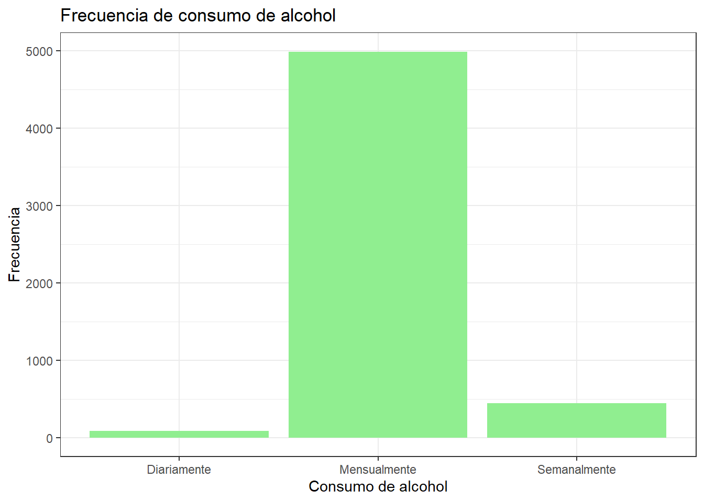
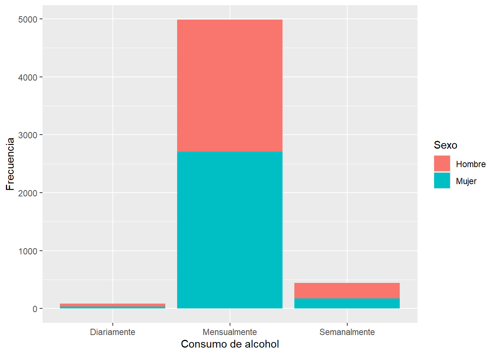

## package 'pacman' successfully unpacked and MD5 sums checked
##
## The downloaded binary packages are in
## C:\Users\elisa\AppData\Local\Temp\RtmpgD8dyZ\downloaded_packages
## package 'kableExtra' successfully unpacked and MD5 sums checked
##
## The downloaded binary packages are in
## C:\Users\elisa\AppData\Local\Temp\RtmpgD8dyZ\downloaded_packages
## package 'haven' successfully unpacked and MD5 sums checked
##
## The downloaded binary packages are in
## C:\Users\elisa\AppData\Local\Temp\RtmpgD8dyZ\downloaded_packages
## [1] "BBDD_Respuesta _Encuesta_ Jovenes.dta"
## [2] "img"Título del trabajo grupal
R para el análisis de datos
Introducción
En este trabajo se llevará a cabo una investigacion sobre la posible influencia que tiene el sexo de una persona con la frecuencia en la que consume alcohol. Para ello, se utilizó la base de datos pública de la décima Encuesta Nacional de Juventudes del año 2022, en ella se seleccionaron las variables P77 y SEXO, las cuales corresponden sobre la frecuencia del consumo de alcohol en jóvenes y el sexo de la persona encuestada. Creemos que es relevante poder ver qué relaciones existen entre estas variables, ya que, las políticas públicas para la moderación del consumo de alcohol, y también la prevención de consumo de otras sustancias, están destinadas para la población en general, sin embargo, no hay políticas enfocadas en el sexo de las personas consumidoras.
A raíz de esto, es sumamente relevante el hecho de investigar esta problemática, pues, a pesar de que se ha estudiado en otros países, es sumamente enriquecedor, para el conocimiento cientifico, observar este problema en la población de mujeres y hombres chilenos. A la vez, los resultados que se obtengan en este estudio puede ser un gran aporte para formar un posible perfil, en base al sexo, de consumidores de bebidas alcoholicas. Esto ultimo es importante, porque, el consumo de bebidas alcoholicas puede afectar de manera negativa a la salud de quienes las consumen en exceso. Puede provocar “accidentes de trafico, reyertas callejeras, agresiones sexuales, problemas de addiccion” (Marcel Elipe Miravet et al. 2021).
Variables
Ahora se cargará la base de datos a utilizar:
A continuación procesaremos las variables seleccionadas para realizar el análisis propuesto:
[1] 9700 477 [1] "AUTOAPLICADO" "COMUNA" "CONGLOMERADO" "EDAD"
[5] "ESTRATO" "FACTOR" "FECHA" "Folio"
[9] "GSE" "ID_MANZANA" "ID_MAPA" "NSE"
[13] "NUM_VIV" "P1_1" "P1_10" "P1_11"
[17] "P1_12" "P1_13" "P1_14" "P1_2"
[21] "P1_3" "P1_4" "P1_5" "P1_6"
[25] "P1_7" "P1_8" "P1_9" "P1_COD"
[29] "P1_OTRO" "P10" "P100" "P101"
[33] "P102_1" "P102_2" "P102_3" "P102_4"
[37] "P102_5" "P102_6" "P102_7" "P103"
[41] "P104_1" "P104_2" "P104_3" "P104_4"
[45] "P104_5" "P104_6" "P104_7" "P104_8"
[49] "P104_9" "P104_COD" "P104_OTROS" "P105_1"
[53] "P105_2" "P105_3" "P106_1" "P106_2"
[57] "P106_3" "P106_4" "P106_5" "P107_1"
[61] "P107_2" "P107_3" "P107_4" "P107_5"
[65] "P108_1" "P108_2" "P108_3" "P108_4"
[69] "P108_5" "P109_1" "P109_2" "P109_3"
[73] "P109_4" "P109_5" "P109_6" "P109_7"
[77] "P109_8" "P11_1" "P11_2" "P11_3"
[81] "P11_4" "P11_5" "P11_6" "P11_7"
[85] "P110_1" "P110_2" "P110_3" "P110_4"
[89] "P110_5" "P110_6" "P110_7" "P110_8"
[93] "P111_1" "P111_2" "P111_3" "P111_4"
[97] "P111_5" "P111_6" "P111_7" "P112_1"
[101] "P112_2" "P112_3" "P112_4" "P112_5"
[105] "P112_6" "P112_7" "P12_1" "P12_2"
[109] "P12_3" "P12_4" "P12_5" "P13"
[113] "P14" "P15" "P16_1" "P16_10"
[117] "P16_2" "P16_3" "P16_4" "P16_5"
[121] "P16_6" "P16_7" "P16_8" "P16_9"
[125] "P16_COD" "P16_OTRO" "P17" "P17_COD"
[129] "P17_OTRO" "P18" "P18_COD" "P18_OTRO"
[133] "P19_1" "P19_2" "P2_1" "P2_10"
[137] "P2_11" "P2_12" "P2_13" "P2_14"
[141] "P2_2" "P2_3" "P2_4" "P2_5"
[145] "P2_6" "P2_7" "P2_8" "P2_9"
[149] "P20" "P20_COD" "P20_OTRO" "P21_1"
[153] "P21_2" "P21_3" "P21_4" "P21_5"
[157] "P22" "P23" "P24_1" "P24_2"
[161] "P24_3" "P24_4" "P25" "P26"
[165] "P27" "P28_1" "P28_2" "P29"
[169] "P29_COD" "P29_OTRO" "P3_1" "P3_10"
[173] "P3_11" "P3_12" "P3_2" "P3_3"
[177] "P3_4" "P3_5" "P3_6" "P3_7"
[181] "P3_8" "P3_9" "P3_COD" "P3_OTRO"
[185] "P30_1" "P30_2" "P30_3" "P30_4"
[189] "P30_5" "P30_6" "P31_1" "P31_2"
[193] "P31_3" "P31_4" "P31_5" "P31_6"
[197] "P31_7" "P31_8" "P32_1" "P32_10"
[201] "P32_11" "P32_12" "P32_13" "P32_14"
[205] "P32_15" "P32_16" "P32_2" "P32_3"
[209] "P32_4" "P32_5" "P32_6" "P32_7"
[213] "P32_8" "P32_9" "P33_1" "P33_2"
[217] "P33_3" "P33_4" "P33_5" "P33_6"
[221] "P34" "P35" "P36" "P37"
[225] "P38" "P39" "P4" "P40"
[229] "P41" "P41_COD" "P41_OTRO" "P42"
[233] "P42_COD" "P42_OTRO" "P43_AÑOS" "P43_MESES"
[237] "P43_SEM_TOTAL" "P43_SEMANAS" "P44" "P44_COD"
[241] "P44_OTRO" "P45" "P45_1" "P46"
[245] "P47" "P47_COD" "P47_OTRO" "P48"
[249] "P49" "P5" "P50_1" "P50_10"
[253] "P50_2" "P50_3" "P50_4" "P50_5"
[257] "P50_6" "P50_7" "P50_8" "P50_9"
[261] "P51" "P51_COD" "P51_OTRO" "P52"
[265] "P52_COD" "P52_OTRO" "P53" "P53_COD"
[269] "P53_OTRO" "P54" "P55" "P56"
[273] "P56_1" "P57" "P57_COD" "P57_OTRO"
[277] "P58_1" "P58_10" "P58_11" "P58_12"
[281] "P58_2" "P58_3" "P58_4" "P58_5"
[285] "P58_6" "P58_7" "P58_8" "P58_9"
[289] "P58_98" "P58_99" "P59_1" "P59_10"
[293] "P59_11" "P59_12" "P59_13" "P59_2"
[297] "P59_3" "P59_4" "P59_5" "P59_6"
[301] "P59_7" "P59_8" "P59_9" "P59_COD"
[305] "P59_OTRO" "P6_1" "P6_2" "P6_3"
[309] "P6_4" "P6_5" "P6_6" "P6_7"
[313] "P60_1" "P60_2" "P60_3" "P60_4"
[317] "P60_5" "P61_1" "P61_2" "P61_3"
[321] "P61_4" "P61_5" "P61_6" "P61_7"
[325] "P61_8" "P61_9" "P61_COD" "P61_OTRO"
[329] "P62" "P63" "P63_COD" "P63_COD2"
[333] "P63_OTRO" "P63_OTRO2" "P64" "P64_COD"
[337] "P64_OTRO" "P65" "P65_1" "P66"
[341] "P67_1" "P67_2" "P67_3" "P67_4"
[345] "P67_5" "P67_6" "P68" "P68_COD"
[349] "P68_OTRO" "P69" "P69_COD" "P69_OTRO"
[353] "P7" "P7_COD" "P7_OTRO" "P70"
[357] "P71" "P72" "P73" "P74"
[361] "P75" "P76_1" "P76_2" "P76_3"
[365] "P76_4" "P76_5" "P76_6" "P76_7"
[369] "P76_8" "P77_1" "P77_2" "P77_3"
[373] "P77_4" "P77_5" "P77_6" "P77_7"
[377] "P77_8" "P78" "P78_1" "P79"
[381] "P79_COD" "P79_OTRO" "P8" "P8_COD"
[385] "P8_OTRO" "P80" "P80_COD" "P80_OTRO"
[389] "P81" "P82" "P83" "P83_COD"
[393] "P83_OTRO" "P84_1" "P84_10" "P84_11"
[397] "P84_12" "P84_13" "P84_14" "P84_2"
[401] "P84_3" "P84_4" "P84_5" "P84_6"
[405] "P84_7" "P84_8" "P84_9" "P85"
[409] "P85_COD" "P85_OTRO" "P86_1" "P86_10"
[413] "P86_11" "P86_12" "P86_13" "P86_14"
[417] "P86_2" "P86_3" "P86_4" "P86_5"
[421] "P86_6" "P86_7" "P86_8" "P86_9"
[425] "P87_1" "P87_2" "P87_3" "P87_4"
[429] "P87_5" "P87_6" "P87_7" "P87_8"
[433] "P87_9" "P87_COD" "P87_OTRO" "P88_1"
[437] "P88_2" "P88_3" "P88_4" "P88_COD"
[441] "P88_OTRO" "P89" "P9" "P90"
[445] "P91" "P92" "P93" "P94"
[449] "P95_1" "P95_2" "P95_3" "P95_4"
[453] "P95_5" "P95_6" "P96" "P97"
[457] "P97_COD" "P97_OTRO" "P98" "P98_COD"
[461] "P98_OTRO" "P99_1" "P99_2" "P99_3"
[465] "P99_4" "P99_5" "P99_6" "P99_7"
[469] "P99_8" "P99_COD" "P99_OTRO" "PONDERADOR"
[473] "REGION" "SEXO" "TIPO_ENCUESTA" "TRAMO"
[477] "ZONA" [1] 4187[1] 5513 2 SEXO
"Sexo"
P77_1
"P77_1. Alcohol (cerveza, vino, pisco, ron u otro licor fuerte)" Sexo
"Sexo"
f_consumo_alcohol
"P77_1. Alcohol (cerveza, vino, pisco, ron u otro licor fuerte)" [1] "Frecuencia de Consumo: Alcohol"[1] "Sexo"[1] Una vez al mes o menos Varias veces al mes Varias veces a la semana
[4] Varias veces al día
6 Levels: Varias veces al día Varias veces a la semana ... NS/NR[1] 2. Mujer 1. Hombre
Levels: 1. Hombre 2. MujerEn el siguiente apartado, en nuestro ejemplo describiremos las variables necesarias para responder a nuestro objetivo.
Descripción de variables
Para este análisis, se seleccionaron las variables:
- SEXO: sexo del encuestado, con nivel de medición nominal.
- f_consumo_alcohol (P77_1): frecuencia de consumo de alcohol del encuestado/a con un nivel de medición ordinal.
### Data Frame Summary
#### proc_data
**Dimensions:** 5513 x 2
**Duplicates:** 5507
---------------------------------------------------------------------------------------------------------------
No Variable Stats / Values Freqs (% of Valid) Graph Valid Missing
---- -------------------- ------------------- -------------------- ----------------------- ---------- ---------
1 Sexo\ 1\. Hombre\ 2592 (47.0%)\ IIIIIIIII \ 5513\ 0\
[factor] 2\. Mujer 2921 (53.0%) IIIIIIIIII (100.0%) (0.0%)
2 f_consumo_alcohol\ 1\. Diariamente\ 83 ( 1.5%)\ \ 5513\ 0\
[character] 2\. Mensualmente\ 4986 (90.4%)\ IIIIIIIIIIIIIIIIII \ (100.0%) (0.0%)
3\. Semanalmente 444 ( 8.1%) I
---------------------------------------------------------------------------------------------------------------| f_consumo_alcohol | Sexo | Total | |
|---|---|---|---|
| Hombre | Mujer | ||
| Diariamente | 49 | 34 | 83 |
| Mensualmente | 2276 | 2710 | 4986 |
| Semanalmente | 267 | 177 | 444 |
| Total | 2592 | 2921 | 5513 |
| χ2=39.237 · df=2 · Cramer's V=0.084 · p=0.000 | |||
Graficos
A continuacion, se mostrarán 2 graficos en los que se pueden visualizar de mejor manera los
graph1 <- proc_data %>% ggplot(aes(x = f_consumo_alcohol)) +
geom_bar(fill = "lightgreen")+
labs(title = "Frecuencia de consumo de alcohol",
x = "Consumo de alcohol",
y = "Frecuencia") +
theme_bw()
graph1
graph2 <- proc_data %>% ggplot(aes(x = f_consumo_alcohol, fill = Sexo)) +
geom_bar() +
xlab("Consumo de alcohol") +
ylab("Frecuencia") +
labs(fill="Sexo")+
scale_fill_discrete(labels = c('Hombre','Mujer'))
graph2
Conclusiones
Revisando los resultados, a través de la primera tabla, nos damos cuenta de que, en todos los casos las mujeres tienen un menor consumo de alcohol que los hombres. Además, la mayor cantidad de mujeres, se concentra en la opción que demuestra un menor consumo, siendo esta la del consumo mensual. Esta conclusión fue esperada, ya que, como sabemos, al vivir en una sociedad heteropatriarcal, la formación valórica y educativa de los sujetos, lleva un sesgo de género que atribuye esteriotipos a cada uno de ellos. Es así que, las mujeres se consideran como sujetas sensibles que expresan sus sentimientos, mientras que los hombres deben ser fuertes, protectores, valientes… No es raro haber escuchado la creencia de que “los hombres no lloran”. Tal como plantea (Ramos-Lira, s. f.) los hombres esconden sus sentimientos, por su dificultad al pedir ayuda y terminan compensando sus malestares por otros medios. “La depresión puede estar “escondida” detrás de comportamientos adictivos y de riesgo, así como detrás de la irritabilidad e impulsividad.” (p.275)
Viendo el gráfico 1 los resultados resultan novedosos, ya que, como percepción previa se tenía la noción de que en la sociedad chilena el consumo de alcohol es bastante normalizado para los panoramas sociales, por lo que se esperaba que la moda se encontrara en la categoría de consumo semanal. Teniendo en cuenta la visibilización que tienen este tipo de productos por medio de la publicidad y su presencia en medios de comunicación, como redes sociales, se “incrementa la probabilidad de que los adolescentes comiencen a consumir esta droga. De acuerdo a esto, se estaría configurando un escenario propicio de acceso y normalización del consumo de alcohol desde la adolescencia para ambos géneros.”(Cabanillas-Rojas 2020) Ahora bien, en el entendido de que la encuesta es aplicada a un grupo de personas que va desde los 15 a los 29 años, se pierde un gran tramo de personas que no son mayores de edad y, por lo tanto, en la teoría, no deberían consumir alcohol, por lo que, quizás, esta podría ser una razón para explicar estos resultados.
Por otra parte, los resultados del gráfico 2 siguen siendo preocupantes para la población masculina, ya que la mayoría de los/as encuestados/as que responden que su consumo es diario antes que mensual o semanal, son hombres. Esto sólo sigue explicando la tendencia adictiva que tiene este género por las atribuciones socioculturales que se tienen hacia su rol, con expectativas que llevan prácticas de este tipo.
Bibliografía
Aquí debería aparecer automáticamente la bibliografía que agregamos con Zotero
Referencias
Cabanillas-Rojas, William. 2020. «Consumo de alcohol y género en la población adolescente escolarizada del Perú: evolución y retos de intervención». Revista Peruana de Medicina Experimental y Salud Pública 37 (1): 148-54. https://doi.org/10.17843/rpmesp.2020.371.5151.
Marcel Elipe Miravet, Marcel Elipe-Miravet, Verónica Cervigón Carrasco, Verónica Cervigón-Carrasco, Olga Fernández García, Olga Fernández García, Verónica Estruch, Verónica Estruch, Rafael Ballester Arnal, y Rafael Ballester-Arnal. 2021. «Consumo excesivo de alcohol ¿existen diferencias de género?» International Journal of Developmental and Educational Psychology: INFAD. Revista de Psicología 1 (2): 109-18. https://doi.org/10.17060/ijodaep.2021.n2.v1.2169.
Ramos-Lira, Luciana. s. f. «¿Por qué hablar de género y salud mental?»